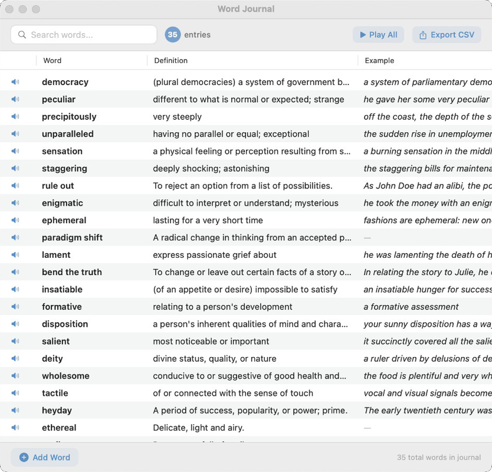

See it in action.



Look up words instantly from any app. Select text, Shift+Click, and build your personal vocabulary journal — without leaving your window.
Download for MacSave definitions as you read. Search, sort, hear pronunciation, and export to CSV for flashcards or study tools.

Download the app, grant accessibility permission when prompted, then select any word and Shift+Click to look it up.
Download Word Journal